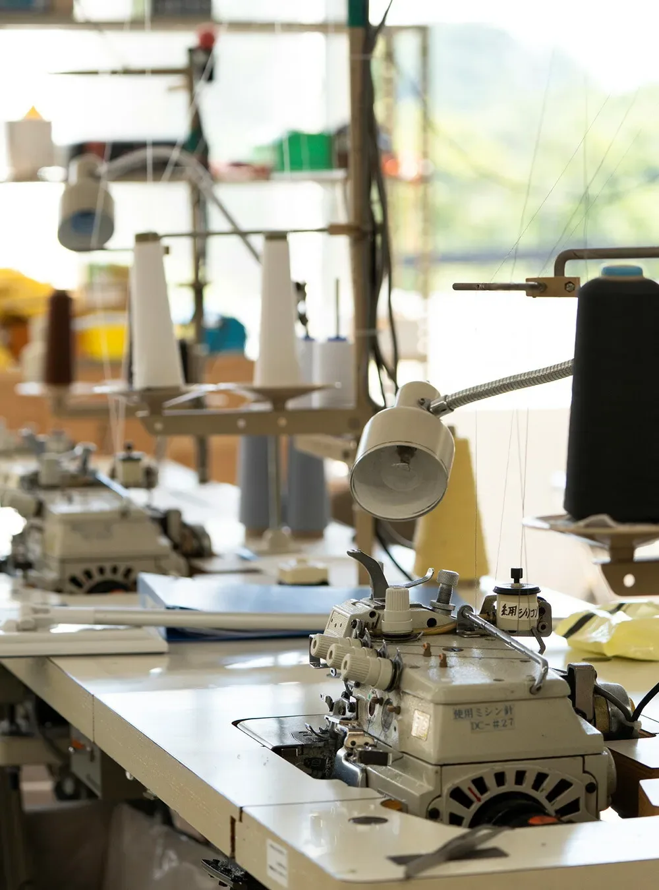
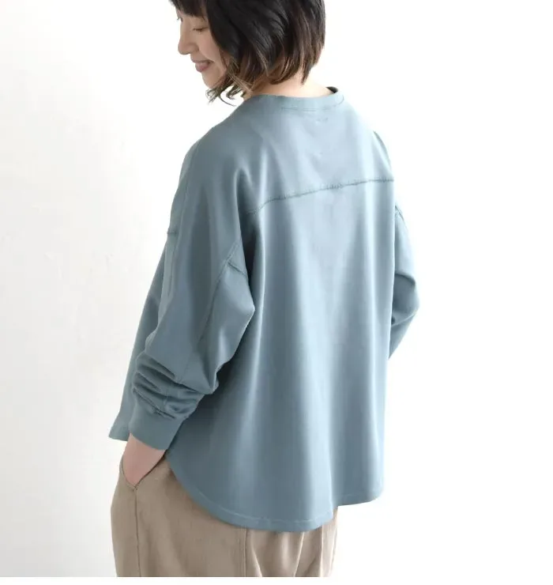
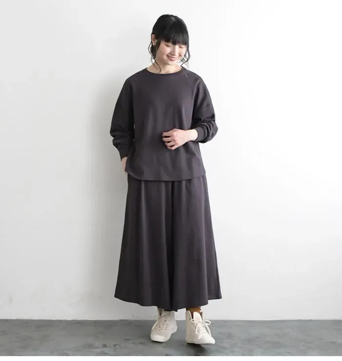

ちょっとたのしく、気持ちよく。
ecoloco
エコロコ
みんなが待ってた、
ほんとうに使える欲しい服。
着心地がいい。ちょうどいい。大人のための、天然素材ナチュラル服。
楽天市場のショップページへ移動します Yahoo!ショッピング
About ecoloco天然素材で、
天然素材で、
毎日をととのえる。
ecolocoは、リネンやコットンなど天然素材を中心にした、大人の女性のためのナチュラル服ブランドです。
私たちはレディースファッションのEC運営と、オリジナルブランドの企画をしています。毎日のなかで本当に使える一着を、ていねいにお届けしたいと考えています。
Company profileOur promise
ブランドの約束
01
着心地がいい。
肌にふれるものだから、素材のやさしさを大切にしています。
02
ちょうどいい。
がんばりすぎず、毎日にちょうどいい服を。
03ちょっとたのしく、

ちょっとたのしく、
気持ちよく。
着るたびに、すこし気分が上がるように。
Original brand
View allオリジナルブランド

ecoloco.official
ecoloco.officialecoloco.official
Recruit
あなたの「ちょうどいい」を、
あなたの「ちょうどいい」を、
ここでかたちに。
カメラマン・スタイリスト・モデル・カスタマーサービス・デザイナー・ライター・コーダー・Webディレクターを募集しています。
採用情報を見る